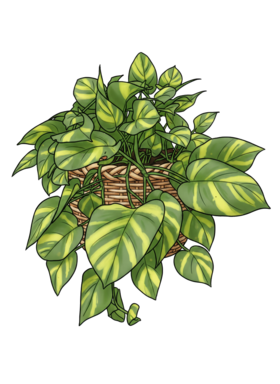

Hover any plant for details · click to open its profile

Plants tracked
1 · room for more
Avg moisture
42% healthy band
Last watered
5d ago Goldie
Sensor health
🟢 1 of 1 online
Plants in this garden